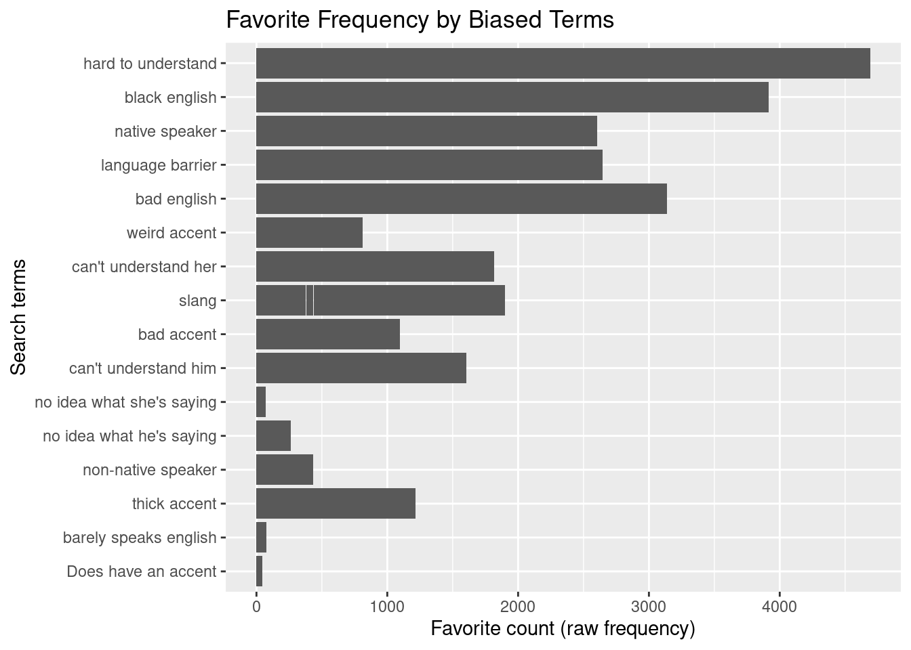

Analyze dataset
2021-11-30
About
Now that we have acquired, curated, and transformed our data, it is time to analyze it and answer the research questions. In this section, we will first look at our data set of tweets and sentiment and perform a sentiment analysis. Then we will look at our map of biased tweets and determine if there are any geographic patterns with linguistic biases.
Setup
First we need to load the necessary packages into our workspace.
library(rtweet) #for twitter data
library(tidyverse) #for data manipulation
library(readtext) #for reading the text file
library(tidytext) #for separating rows and columns
library(knitr) # for pretty tables
library(janitor) # cross tabulationsThen we need to read in our data files from the transform data step. The first one is the data table of tweets and sentiments.
sentiment_data <- readtext(file = "../data/original/tweets_words_sentiments.csv", verbosity = 0) %>%
as_tibble()
#read the .run files and suppress warnings Now we want to read in our data file with the map of biased tweets.
biased_tweet_map <- readtext(file = "../data/original/", verbosity = 0) %>%
as_tibble()
#read the .run files and suppress warnings Run
Sentiment and Popularity Analysis
First, let’s glimpse our dataset to see what we are working with and jog our memory.
glimpse(sentiment_data) #preview data## Rows: 10,088
## Columns: 10
## $ doc_id <chr> "tweets_words_sentiments.csv.1", "tweets_words_sentiments.csv.2…
## $ text <chr> "xtwitter_data.csv.2", "xtwitter_data.csv.2", "xtwitter_data.cs…
## $ text.1 <chr> "x931073275", "x931073275", "x931073275", "x931073275", "x93107…
## $ favorite_count <int> 0, 0, 0, 0, 0, 4, 55, 55, 0, 0, 0, 0, 0, 0, 48, 48, 0, 0, 0, 0,…
## $ retweet_count <int> 0, 0, 0, 0, 0, 1, 0, 0, 0, 0, 0, 0, 0, 0, 4, 4, 0, 0, 0, 0, 0, …
## $ lat <dbl> NA, NA, NA, NA, NA, NA, NA, NA, NA, NA, NA, NA, NA, NA, NA, NA,…
## $ lng <dbl> NA, NA, NA, NA, NA, NA, NA, NA, NA, NA, NA, NA, NA, NA, NA, NA,…
## $ search_term <chr> "no idea what he's saying", "no idea what he's saying", "no ide…
## $ word <chr> "decline", "trump", "sad", "sad", "sad", "garbage", "good", "fa…
## $ sentiment <chr> "negative", "positive", "negative", "negative", "negative", "ne…This dataset contains 10,088 rows, corresponding to individual words, and 10 columns, corresponding to variables. The variables we have are the document id, the text of the entire tweet, the favorite count, the retweet count, the geographic location, the search term that the tweet had, the individual word, and the sentiment attached to each word.
Now, let’s make a table of our data to determine what percent of the words are assigned to a positive or negative sentiment. I would expect the words around biased terms to contain more negative sentiments because bias typically is present in negative contexts. For example, the biased search term “bad accent” has a negative sentiment attached to it because of the word “bad.”
sentiment_data %>% # data frame
tabyl(sentiment) # cross-tabulateFrom this output, we see a slight majority of negative words, 56% negative. Positive words occur less of the time, at 43%. However, since the percentages are relatively close to 50/50, this suggests that biased terms occur in contexts not completely dominated by negative or positive words, but in everyday language.
Next, let’s look at the popularity of each search term. In everyday language, people may not explicitly say a discriminatory comment, as it is masked by other neutral or even positive words. Such comments may pass unnoticed and gain an audience on social media platforms like Twitter. On Twitter, we can easily see how “liked” or popular a tweet is by the number of people who retweet it. Let’s look at a bar graph of each search term and how many times the tweet with that term was retweeted (“11. Exploratory Methods: Descriptive and Unsupervised Learning Analysis Methods,” n.d.). In this case, we’ll want to use our original dataset with each row corresponding to one tweet to account for the fact that some tweets are longer than others.
twitter_data <- readtext(file = "../data/original/twitter_data.csv", verbosity = 0) %>%
as_tibble()
#read the .run files and suppress warnings p1 <- twitter_data %>%
ggplot(aes(x=search_term, y=retweet_count)) +
geom_bar(stat="identity")
p1
From this barplot, we can clearly see that there are some biased terms that are more popular than others based on how often they are retweeted. For example, tweets with the search term A are not retweeted very often, but tweets with the search term B are very popular and retweeted a lot. This may help people be more aware of certain terms that fly under the radar in casual informal conversations or texts, but actually have discriminatory meanings. We can also look for trends in popularity by looking at how many times the tweet was favorited. Here is another barplot where we can see trends in biased terms in tweets that have been favorited.
p2 <- twitter_data %>%
ggplot(aes(x=search_term, y=favorite_count)) +
geom_bar(stat="identity")
p2
From this barplot, we can see similar trends where some search terms are favorited more frequently than others. Tweets with the search term C were favorited a lot more frequently than other terms such as D and E.
So, we have a barplot that shows differences in retweet frequency based on search term, but is this a significant difference? Let’s perform a chi square test to see if there is really a significant impact of the search term on how often it is retweeted.
retweet_term_tab <- xtabs(~retweet_count + search_term,
data = sentiment_data)c1 <- chisq.test(retweet_term_tab)## Warning in stats::chisq.test(x, y, ...): Chi-squared approximation may be incorrectc1$p.value < .05## [1] TRUEBased on the output from this chi square analysis, there is not a significant effect of search term on how many times the tweet has been retweeted. However, there may be a significant effect of search term on how many times the tweets have been favorited…
Here we will perform the same analysis, but on favorited tweets
favorite_term_tab <- xtabs(~favorite_count + search_term,
data = sentiment_data)c1 <- chisq.test(favorite_term_tab)## Warning in stats::chisq.test(x, y, ...): Chi-squared approximation may be incorrectc1$p.value < .05## [1] TRUEBased on this output, we see that there is a significant effect of search term on the number of times a tweet is favorited. Therefore, there are certain search terms that are significantly more popular than others.
Geographic Analysis
Let’s look at our map and see if there are trends where certain biased terms are more common in certain regions. To recap, we have a map of the United States and the geolocation of each tweet plotted in a color corresponding to the biased search term that was contained in that tweet. This could help us visualize if certain biases are more prevalent in certain regions of the country. Understanding where biases are more common may help us begin to eliminate linguistic discrimination by targeting certain regions with certain information.
knitr::include_graphics(path="../data/states_map_fixed.png") #pull image from the data folder and print in this page Here we see a map of the United States with tweets plotted based on available geolocation, and the biased search term found in that tweet is color-coded based on the legend on the right side. First, we see a majority of biased tweets concentrated in the midwest and the east coast. This may be due to a larger concentration of tweets coming from this area in the first place, or it could be because individuals in those regions hold more linguistic biases.
Here we see a map of the United States with tweets plotted based on available geolocation, and the biased search term found in that tweet is color-coded based on the legend on the right side. First, we see a majority of biased tweets concentrated in the midwest and the east coast. This may be due to a larger concentration of tweets coming from this area in the first place, or it could be because individuals in those regions hold more linguistic biases.
We do see a second trend based on search terms. In the south west, we see more biased tweets with terms such as “can’t understand him or her,” “hard to understand,” and “language barrier.” This may suggest that individuals in the south west hold biases towards other accents or languages based on a lack of understanding or comprehension.
In the northeast and the midwest, we see more biased tweets with terms such as “native speaker,” “nonnative speaker,” “slang,” and “thick accent.” This may suggest that individuals in the northeast and midwest hold biases towards nonnative speakers of English or their native language. Linguistic discrimination in these regions may target nonnative speakers of English or people who speak with a thick accent who speak English as a second or third language. Also, the search term “slang” may suggest that individuals in the northeast and midwest hold biases towards informal and nontraditional language and label any of that language as “slang.”
Log
The results of this file include an analysis of the sentiment and geolocations of a sample of tweets containing biased terms. There are no file outputs.
Session
View session information